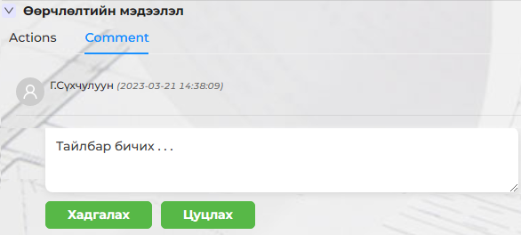
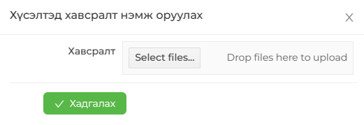
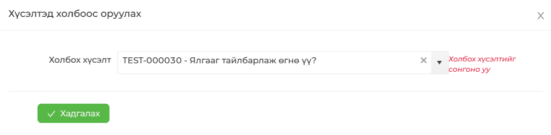
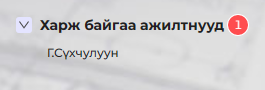
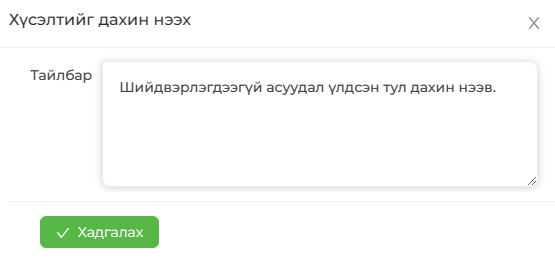
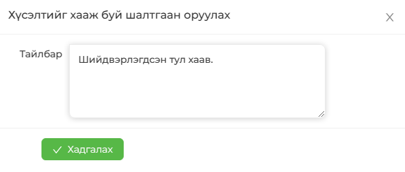

| Үйлдийн нэр / Товчлуурын үүрэг | Тайлбар |
|---|---|
| < Буцах | Буцах үйлдэл (Өмнөх цонх болон цэс рүү) |
| Тайлбар оруулах | Өөрчлөлтийн мэдээлэлд тайлбар оруулах |
| Хавсралт оруулах | Хүсэлтэд хавсралт файл нэмж оруулах |
| Холбоос нэмэх | Тухайн хүсэлттэй холбоотой холбоосыг нэмэх |
| Харж байх / Харахаа болих | Хүсэлтийн мэдээллийг харах / болих |
| Дахин нээх | Хүсэлтийн төлөв Шийдвэрлэсэн (Resolved) болсон үед идэвхэжнэ. |
| Хаах | Хүсэлтийг хаах |





